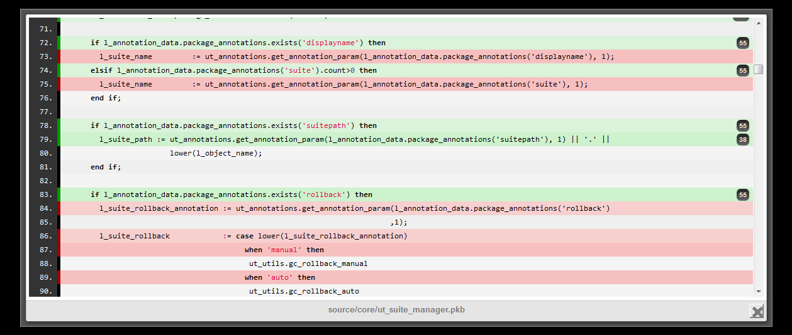
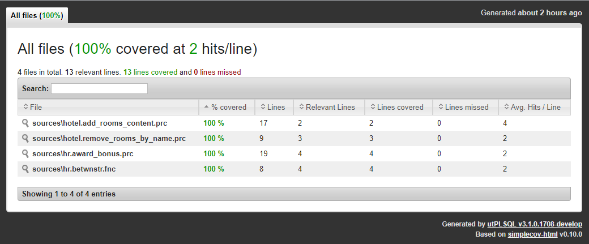
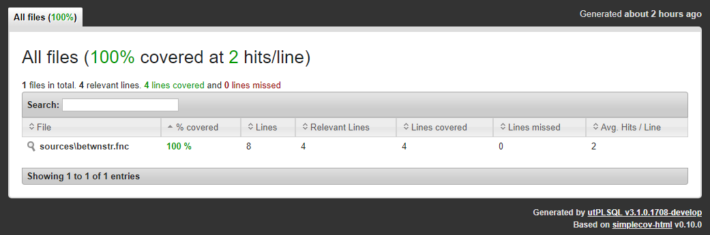
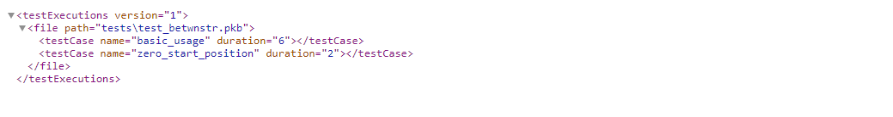
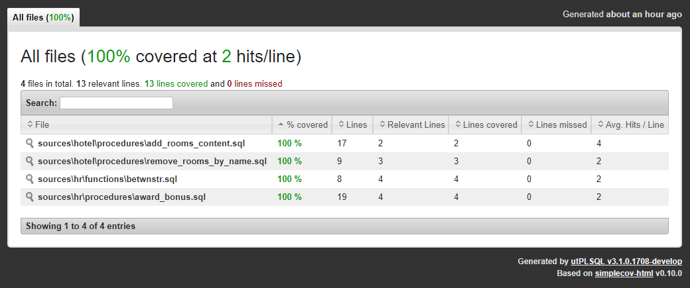

Code coverage

utPLSQL comes with a built-in coverage reporting engine. The code coverage reporting uses package DBMS_PROFILER (and DBMS_PLSQL_CODE_COVERAGE on Oracle database version 12.2 and above) provided with Oracle database. Code coverage is gathered for the following source types:
- package bodies
- type bodies
- triggers
- procedures
- functions
Note
The package and type specifications are excluded from code coverage analysis. This limitation is introduced to avoid false-negatives. Typically package specifications contain no executable code. The only exception is initialization of global constants and variables in package specification. Since most package specifications are not executable at all, there is no information available on the number of lines covered and those would be reported as 0% covered, which is not desirable.
To obtain information about code coverage for unit tests, run utPLSQL with one of built-in code coverage reporters. The following code coverage reporters are supplied with utPLSQL:
ut_coverage_html_reporter- generates a HTML coverage report providing summary and detailed information on code coverage. The HTML reporter is based on the open-source simplecov-html reporter for Ruby. It includes source code of the code that was covered (if the code is accessible for test user)ut_coveralls_reporter- generates a Coveralls compatible JSON coverage report providing detailed information on code coverage with line numbers. This coverage report is designed to be consumed by cloud services like Coverallsut_coverage_sonar_reporter- generates a Sonar Compatible XML coverage report providing detailed information on code coverage with line numbers. This coverage report is designed to be consumed by services like SonarQube and SonarCloudut_coverage_cobertura_reporter- generates a basic Cobertura coverage (http://cobertura.sourceforge.net/xml/coverage-04.dtd) report providing detailed information on code coverage with line numbers. This coverage report is designed to be consumed by services like TFS and Jenkins. Check this link for an example of XML generated by Java: https://raw.githubusercontent.com/jenkinsci/cobertura-plugin/master/src/test/resources/hudson/plugins/cobertura/coverage-with-data.xml
Security model¶
utPLSQL code coverage uses DBMS_PROFILER to gather information about the execution of code under test and therefore follows the DBMS_PROFILER's Security Model. In order to be able to gather coverage information, the user executing unit tests needs to be either:
- The owner of the code that is being tested
- Have the following privileges to be able to gather coverage on code owned by other users:
create any proceduresystem privilegeexecuteprivilege on the code that is being tested (not only the unit tests) orexecute any proceduresystem privilege
If you have execute privilege on the code that is being tested, but do not have create any procedure system privilege, then the code that is being tested will be reported as not covered (coverage = 0%).
If you have execute privilege only on the unit tests, but do not have execute privilege on the code that is being tested, the code will not be reported by coverage - as if it did not exist in the database.
If the code that is being tested is compiled as NATIVE, the code coverage will not be reported as well.
Manually running unit tests with coverage¶
Using the code coverage functionality is as easy as using any other reporter for the utPLSQL test-run. Run your tests from your preferred SQL tool and save the reporter results to a file.
All you need to do, is pass the constructor of the reporter to the ut.run procedure call.
Example:
The above command executes all unit tests in the current schema, gathers information about code coverage for all sources in that schema and outputs the HTML report as text into DBMS_OUTPUT. Theut_coverage_html_reporter will produce an interactive HTML report. You can see a sample of code coverage for the utPLSQL project here
The report provides summary information with a list of source code that should be covered.

The report allow you to navigate to each source file and inspect line by line coverage.

Oracle 12.2 extended coverage with profiler and block coverage¶
Using data collected from profiler and block coverage running parallel we are able to enrich information about coverage. For every line recorded by the profiler if we have a partially covered same line in block coverage we will display that information presenting line as partially covered, displaying number of block and how many blocks have been covered in that line.The feature will be automatically enabled in the Oracle database version 12.2 and higher, for older versions current profiler will be used.
utPLSQL installation automatically creates tables needed by dbms_plsql_code_coverage on databases in versions above 12c Release 1.
Due to security model of dbms_plsql_code_coverage package, utPLSQL grants access to those tables and creates synonyms for those tables.
The access and synonyms will be public when using the headless installation. This approach avoids complexity of forcing every user of utPLSQL framework to create tables on their own.
Sample output:


Coverage reporting options¶
There are two distinct ways to gather code coverage: - Coverage on database schema(s) - Coverage on project files
Those two options are mutually exclusive and cannot be mixed. By default, when using one of coverage reporters, coverage is gathered on schema(s). The database schema(s) containing the tests that were executed during the run will be reported on by coverage reporter.
The parameters used to execute tests determine if utPLSQL will be using one approach or the other.
If parameter a_source_file_mappings or a_source_files is provided, then coverage is gathered on project files provided, otherwise coverage is gathered on schemas.
Note
Regardless of the options provided, all unit test packages are excluded from the coverage report. Coverage reports provide information only about the tested code.
The default behavior of coverage reporting can be altered using invocation parameters.
Schema based Coverage¶
To gather coverage for all objects in the current schema execute tests with coverage report as argument. This is the default reporting option and therefore additional coverage options don't need to be provided.
Note
When no filters are used, the size of the coverage report will depend two factors:
- the type of report (does the report include source code or not)
- the amount of source code in the database schema
Keep in mind that for schemas containing a lot of code, it can take quite some time to produce the coverage report.
Setting coverage schema(s)¶
By default, coverage is gathered on the schema(s) derived from suite paths provided to execute tests. This is a valid approach as long as your test packages and tested code share the same schema.
So when you run:
user_1 and user_2 objects.
If your tests live in a different schema from the tested code you may override the default behavior by providing an explicit list of coverage schema names.
In the example below, coverage will still be gathered for user_1 and user_2 objects, even thought we run the tests located in schema unit_test_schema
Filtering objects in coverage reports¶
Multiple parameters can be used to define the scope of coverage report.
a_source_file_mappings ( ut_file_mappings )- map of filenames to database objects. It is used for file-based coverage - see below.a_include_schema_expr ( varchar(4000) )- string of regex expression of schemas to be included in the coverage report. Case-insensitive.a_include_object_expr ( varchar(4000) )- string of regex expression of objects ( without schema name ) to be included in the coverage report. Case-insensitive.a_exclude_schema_expr ( varchar(4000) )- string of regex expression of schemas to be excluded from the coverage report. Case-insensitive.a_exclude_object_expr ( varchar(4000) )- string of regex expression of objects ( without schema name ) to be excluded from the coverage report. Case-insensitive.a_coverage_schemes ( ut_varchar2_list )- List of database schema names to gather coverage on.a_include_objects ( ut_varchar2_list )- list of[object_owner.]object_nameto be included in the coverage report.a_exclude_objects ( ut_varchar2_list )- list of[object_owner.]object_nameto be excluded from the coverage report.
You may specify both include and exclude options to gain more control over what needs to be included / excluded from the coverage report.
Important note
The order of priority is for evaluation of include/exclude filter parameters is as follows.
- if a_source_file_mappings is defined then all include/exclude parameters are ignored (see section below for usage of a_source_file_mappings parameter )
- else if a_include_schema_expr or a_include_object_expr parameter is specified then parameters a_coverage_schemes and a_include_objects are ignored
- else if a_include_objects is specified then the coverage is gathered only on specified database objects.
- if a_coverage_schemes is specified then those schemas are used for objects in a_include_objects without schema name
- if a_coverage_schemes is not specified then schema from paths (a_paths) parameter are used for objects in a_include_objects without schema name
- else if, only the a_coverage_schemes is specified then the coverage is gathered only on specified database schemas
- else if no coverage specific parameters are provided coverage is gathered on all schemas specified in paths passed to run procedure
- else if no paths were specified, the coverage is gathered on current schema of the session running the tests
The exclude parameters are not mutually-exclusive and can be mixed together. All of exclude parameters are always applied.
Example: Limiting coverage by schema regex.
^ut3_develop
Example: Limiting coverage by schema regex with parameter a_include_objects ignored.
^ut3_develop.
Example: Limiting coverage by object regex.
regex123.
Example: Limiting coverage by object regex with parameter a_include_objects ignored.
utl.
Example: Limiting coverage by excluding schema with regex.
er_1$
Example: Limiting coverage by excluding schema with regex and excluding specific object.
er_1$
Will also exclude object user_2.utils_package from coverage report
Example: Limiting coverage by excluding objects with regex.
utl.
Example: Limiting coverage by excluding objects with regex with parameter a_exclude_objects ignored.
utl.
Will also exclude object user_2.utils_package from coverage report
Example: Limiting coverage by object name, for tested code located in the same schema as the unit tests.
user_1 and user_2. Coverage will only be reported on objects user_1.award_bonus, user_2.award_bonus
Example: Limiting coverage by object name, for tested code located in different schemas than the unit tests.
unit_test_schema. Coverage will only be reported on objects user_1.award_bonus, user_2.award_bonus, user_1.betwnstr, user_2.betwnstr.
Objects that do not exist in the database but were specified in a_include_objects will be ignored.
Example: Limiting coverage by object owner and name.
unit_test_schema. Coverage will only be reported on objects user_1.award_bonus, user_2.betwnstr
The a_exclude_objects can be used in the same way as a_include_objects.
Example: Excluding objects from coverage report by providing a list of object owner/name to be excluded.
test_award_bonus in schema unit_test_schema. Coverage will be reported on all objects in schema ut3_user except the betwnstr object.
Note
Filtering using a_include_objects and a_exclude_objects is only applicable when gathering coverage for a schema. Those filters are not applied when reporting coverage on project files.
Note
When running coverage on schema objects, all source code of package bodies, functions, procedures, type bodies and triggers that were not executed will be reported as having 0% code coverage and all source code lines will show as uncovered. This is different from the behavior when gathering coverage on project files.
Project based Coverage¶
utPLSQL provides reporters that produce reports consumable by external tools like Sonar/SonarCloud & Coveralls.
Services like Sonar, Coveralls and others perform analysis based on source code in project files. They are abstracted from database, schema names, packages, procedures and functions, and operate on a more generic concept of project source code.
To be able to effectively use reporters dedicated for those tools, utPLSQL provides functionality for mapping database object names to project files.
There are a few significant differences when running coverage on project files compared to running coverage on schema(s).
- Coverage is only reported on objects that were successfully mapped to project files.
- Project files (database objects) that were not executed at all are not reported as fully uncovered. It is up to the consumer (Sonar/Coveralls) to determine if project file should be considered as 0% coverage or just ignored.
In order to successfully use coverage on project files, those files must be mapped to database objects.
Though you can gather project based code coverage directly using exec ut.run(...), it is highly recommended to use utPLSQL-cli command line client.
The examples below are using utPLSQL-cli to execute tests and gather coverage information.
File mapping using default parameters¶
The example below illustrates a directory structure supported by the default parameters of utPLSQL. The structure represents a multi-schema project with file names indicating object owner.
C:
\my_project
\sources
\hotel.add_rooms_content.prc
\hotel.remove_rooms_by_name.prc
\hotel.rooms.tbl
\hr.award_bonus.prc
\hr.betwnstr.fnc
\hr.employees_test.tbl
\tests
\hotel.test_add_room_content.pkb
\hotel.test_add_room_content.pks
\hotel.test_remove_rooms_by_name.pkb
\hotel.test_remove_rooms_by_name.pks
\hr.test_award_bonus.pkb
\hr.test_award_bonus.pks
\hr.test_betwnstr.pkb
\hr.test_betwnstr.pks
By default, utPLSQL will convert file paths into database objects using the following regular expression /(((\w|[$#])+)\.)?((\w|[$#])+)\.(\w{3})$
- object owner (if it is present) is identified by the expression in the second set of brackets
- object name is identified by the expression in the fourth set of brackets
- object type is identified by the expression in the sixth set of brackets
Note
utPLSQL will replace any '\' with '/' for the purpose of mapping files to objects. The paths shown in the results will remain (contain '\' where it was present). This is done to simplify the syntax of regular expressions. Regular expression will always use '/' as a directory separator on a file path regardless of whether you're on a Windows or Unix system.
Note
Below examples assume that you have downloaded latest version of utPLSQL-cli and extracted it into your projects root directory and that you run the utPLSQL-cli from that directory.
Windows:
utPLSQL-cli\bin\utplsql run test_runner/pass@db_host:db_port/db_service_name ^
-p=hr,hotel ^
-source_path=sources ^
-test_path=tests ^
-f=ut_coverage_html_reporter -o=coverage.html ^
-f=ut_sonar_test_reporter -o=test_results.xml
Bash:
utPLSQL-cli/bin/utplsql run test_runner/pass@db_host:db_port/db_service_name \
-p=hr,hotel \
-source_path=sources \
-test_path=tests \
-f=ut_coverage_html_reporter -o=coverage.html \
-f=ut_sonar_test_reporter -o=test_results.xml
The above commands will:
- connect as user
test_runner - run all utPLSQL v3 tests for users
hr,hotel - map database code to project files in
sourcesdirectory and save code coverage results intocoverage.html - map test packages to project files in
testsdirectory and save test results intotest_results.xml
To better understand the default regular expression used, have a look here.
Tested code is mapped to files in coverage.html

Unit test code is mapped to files in test_results.xml

Using custom regular expressions¶
If your project directory structure is different, you can use additional configuration parameters to tell utPLSQL how the project files are to be mapped into database objects.
Example: Using custom regular expressions on a multi-schema project with separate directories for each object owner.
C:
\my_project
\sources
\hotel
\add_rooms_content.prc
\remove_rooms_by_name.prc
\rooms.tbl
\hr
\award_bonus.prc
\betwnstr.fnc
\employees_test.tbl
\tests
\hotel
\test_add_room_content.pkb
\test_add_room_content.pks
\test_remove_rooms_by_name.pkb
\test_remove_rooms_by_name.pks
\hr
\test_award_bonus.pkb
\test_award_bonus.pks
\test_betwnstr.pkb
\test_betwnstr.pks
The command below will gather coverage and map files to database objects using custom regular expression.
Note that the owner/name/type subexpressions don't need to be explicitly specified if they are same as default values ( 2/3/4 ).
In the below example, they were specified explicitly only for source_path, test_path doesn't have subexpressions specified and so they are default (2/3/4).
Windows:
utPLSQL-cli\bin\utplsql run test_runner/pass@db_url ^
-p=hr,hotel ^
-source_path=sources ^
-regex_expression="/((\w+)/)?(\w+)\.(\w{3})$" ^
-owner_subexpression=2 ^
-name_subexpression=3 ^
-type_subexpression=4 ^
-test_path=tests -regex_expression="/((\w+)/)?(\w+)\.(\w{3})$" ^
-f=ut_coverage_html_reporter -o=coverage.html ^
-f=ut_sonar_test_reporter -o=test_results.xml ^
Bash:
utPLSQL-cli/bin/utplsql run test_runner/pass@db_url \
-source_path=sources \
-regex_expression="/((\w+)/)?(\w+)\.(\w{3})$" \
-owner_subexpression=2 \
-name_subexpression=3 \
-type_subexpression=4 \
-test_path=tests -regex_expression="/((\w+)/)?(\w+)\.(\w{3})$" \
-owner_subexpression=2 \
-name_subexpression=3 \
-type_subexpression=4 \
-f=ut_coverage_html_reporter -o=coverage.html \
-f=ut_sonar_test_reporter -o=test_results.xml
You can specify different mapping rules for source files and for test files - see utPLSQL-cli readme for details.
To better understand the regular expression used, have a look here.
Tested code is mapped to files in coverage.html

Unit test code is mapped to files in test_results.xml

Explicitly specifying object owner¶
When dealing with projects that operate within a single schema the project structure probably doesn't indicate the owner. In such scenarios, you can explicitly specify the object owner for both tests and source code.
Example: Single-schema project - no indication of object owner
The command below will gather coverage and map files to database objects.
For the database objects mapped to souces directory user code_owner will be used.
For the database objects mapped to tests directory user tests_owner will be used.
Windows:
utPLSQL-cli\bin\utplsql run test_runner/pass@db_url ^
-p=tests_owner ^
-source_path=sources -owner=code_owner ^
-test_path=tests -owner=tests_owner ^
-f=ut_coverage_html_reporter -o=coverage.html ^
-f=ut_sonar_test_reporter -o=test_results.xml
Bash:
utPLSQL-cli/bin/utplsql run test_runner/pass@db_url \
-p=tests_owner \
-source_path=sources -owner=code_owner \
-test_path=tests -owner=tests_owner \
-f=ut_coverage_html_reporter -o=coverage.html \
-f=ut_sonar_test_reporter -o=test_results.xml
Note
When the project folder structure does not provide any information about source code owner and test owner, you can specify the owner for tests and owner for code explicitly. Such project configuration supports only single-owner for source code and single owner for tests.
Tested code is mapped to files in coverage.html

Unit test code is mapped to files in test_results.xml

Custom mapping of object types¶
By default, when mapping project files to database objects, utPLSQL will identify the object type by file extension.
The table below represents the default mapping of file extensions to database object types.
| file extension | object type |
|---|---|
| tpb | type body |
| pkb | package body |
| bdy | package body |
| trg | trigger |
| fnc | function |
| prc | procedure |
If your project naming convention differs and your file extensions do not match the above, or you simply name all of your files with .sql suffix, you can still use utPLSQL, but you need to provide custom mapping for object types.
Example: Multi-schema project with separate directories for each object owner and object type
C:
\my_project
\sources
\hotel
\functions
\packages
\packages_bodies
\procedures
\add_rooms_content.sql
\remove_rooms_by_name.sql
\tables
\rooms.sql
\triggers
\types
\type_bodies
\hr
\functions
\betwnstr.sql
\packages
\package_bodies
\procedures
\award_bonus.sql
\tables
\employees_test.sql
\triggers
\types
\types_bodies
\tests
\hotel
\packages
\test_add_room_content.sql
\test_remove_rooms_by_name.sql
\packages_bodies
\test_add_room_content.sql
\test_remove_rooms_by_name.sql
\hr
\packages
\test_award_bonus.sql
\test_betwnstr.sql
\packages_bodies
\test_award_bonus.sql
\test_betwnstr.sql
Windows:
utPLSQL-cli\bin\utplsql run test_runner/pass@db_url ^
-p=hr,hotel ^
-source_path=sources ^
-regex_expression="/(\w+)/(\w+)/(\w+)\..{3}$" ^
-type_mapping="packages_bodies=PACKAGE BODY/types_bodies=TYPE BODY/triggers=TRIGGER/procedures=PROCEDURE/functions=FUNCTION" ^
-owner_subexpression=1 ^
-name_subexpression=3 ^
-type_subexpression=2 ^
-test_path=tests -regex_expression="/(\w+)/(\w+)/(\w+)\..{3}$" ^
-type_mapping="packages_bodies=PACKAGE BODY/types_bodies=TYPE BODY/triggers=TRIGGER/procedures=PROCEDURE/functions=FUNCTION" ^
-owner_subexpression=1 ^
-name_subexpression=3 ^
-type_subexpression=2 ^
-f=ut_coverage_html_reporter -o=coverage.html ^
-f=ut_sonar_test_reporter -o=test_results.xml
Bash:
utPLSQL-cli/bin/utplsql run test_runner/pass@db_urll \
-p=hr,hotel \
-source_path=sources \
-regex_expression="/(\w+)/(\w+)/(\w+)\..{3}$" \
-type_mapping="packages_bodies=PACKAGE BODY/types_bodies=TYPE BODY/triggers=TRIGGER/procedures=PROCEDURE/functions=FUNCTION" \
-owner_subexpression=1 \
-name_subexpression=3 \
-type_subexpression=2 \
-test_path=tests -regex_expression="/(\w+)/(\w+)/(\w+)\..{3}$" \
-type_mapping="body=PACKAGE BODY/type_body=TYPE BODY/trigger=TRIGGER" \
-owner_subexpression=1 \
-name_subexpression=3 \
-type_subexpression=2 \
-f=ut_coverage_html_reporter -o=coverage.html \
-f=ut_sonar_test_reporter -o=test_results.xml
The parameter type_mapping accepts a list of a key-value pairs representing a mapping of regex subexpression to database object type.
To better understand the regular expression used, have a look here.
Tested code is mapped to files in coverage.html

Unit test code is mapped to files in test_results.xml

Object-file mapping rules¶
In order to allow deterministic and accurate mapping of database source-code into project files, the project directory and file structure needs to meet certain criteria.
- Source code is kept separate from test code (separate directories)
- Each database (source-code) object is stored in an individual file. Package/type specification is kept separate from its body.
- File name (file path) contains the name of database object
- Each file-path clearly identifies object type (by file extension)
- Each file contains representation of database object "as is". No extra commands (like
set echo offALTER SESSION SET PLSQL_CCFLAGS = 'debug:TRUE';) or blank lines are present beforeCREATE TYPE,CREATE TYPEetc. - When project is spanning across multiple database schemes, each file-path clearly and uniformly identifies object owner
File mapping from SQL¶
The ut.run command provides interface to map project into database objects when executing tests.
While it is much easier to perform mapping directly from command line, it is possible to achieve similar functionality from any SQL client.
The main differences when using the ut.run(...) command, will be:
- you can only use single reporter and therefore will get only one report from test execution
- you need to provide fill list of project files rather than point to
sourcesandtestsdirectories
Example project directory structure.
C:
\my_project
\sources
\hotel
\functions
\packages
\packages_bodies
\procedures
\add_rooms_content.sql
\remove_rooms_by_name.sql
\tables
\rooms.sql
\triggers
\types
\type_bodies
\hr
\functions
\betwnstr.sql
\packages
\package_bodies
\procedures
\award_bonus.sql
\tables
\employees_test.sql
\triggers
\types
\types_bodies
\tests
\hotel
\packages
\test_add_room_content.sql
\test_remove_rooms_by_name.sql
\packages_bodies
\test_add_room_content.sql
\test_remove_rooms_by_name.sql
\hr
\packages
\test_award_bonus.sql
\test_betwnstr.sql
\packages_bodies
\test_award_bonus.sql
\test_betwnstr.sql
To execute all tests and map database source code into source file names you could use the following command in any SQL client:
To execute all tests and map database tests code into test file names you could use the following command in any SQL client:
Reporting coverage outside utPLSQL and in parallel sessions¶
utPSLQL allows fo standalone reporting code coverage across multiple database sessions. This functionality enables coverage reporting for external testing tools.
Following API calls enable the standalone coverage reporting.
ut_runner.coverage_start( coverage_run_id );- initiates code coverage within a sessionut_runner.coverage_stop();- stops gathering of code coverage within a session.get_report( ... )- coverage reporters function producing coverage report as pipelined data-set (to be used in SQL query).get_report_cursor( ... )- coverage reporters function producing coverage report as ref-cursor
Example:
Specification of parameters for get_report and get_report_cursor
The a_client_character_set is used to provide character set to the report. Coverage reports in XML and HTML format include this information to assure that HMTL/XML encoding tag is aligned with encoding of the report produced.
Use this parameter to provide encoding of your client application.
The a_coverage_options parameter is used to control the scope and formatting of data returned by report.
ut_coverage_options object accepts the following arguments
coverage_run_id- identifier of coverage run to generate report for - data-typeRAW(32)schema_names- optional - list of schema names to include in coverage report - data-typeUT_VARCHAR2_ROWSexclude_objects- optional - list of object names to exclude from report - data-typeUT_VARCHAR2_ROWSinclude_objects- optional - list of object names to gather coverage on - data-typeUT_VARCHAR2_ROWSfile_mappings- optional - list of schema names to gather coverage on - data-typeUT_FILE_MAPPINGSinclude_schema_expr- optional - regular expression to match against schema name to include in coverage - data-typeVARCHAR2(4000)include_object_expr- optional - regular expression to match against object name to include in coverage - data-typeVARCHAR2(4000)exclude_schema_expr- optional - regular expression to match against schema name to exclude in coverage - data-typeVARCHAR2(4000)exclude_object_expr- optional - regular expression to match against object name to exclude in coverage - data-typeVARCHAR2(4000)
coverage_run_id parameter identifies a common coverage run. The valid value type for that parameter is RAW(32).
It is recommended to use sys_guid() to generate a common, unique identifier for a specific coverage run.
If the identifier is not unique, previous runs of coverage that used the same coverage_run_id will be aggregated to the resulting coverage report.
For details on the meaning of schema_names, exclude_objects, include_objects, file_mappings see sections above.
Note that data-types of include/exclude/schema lists are different when calling ut.run vs. calling get_report/get_report_cursor.